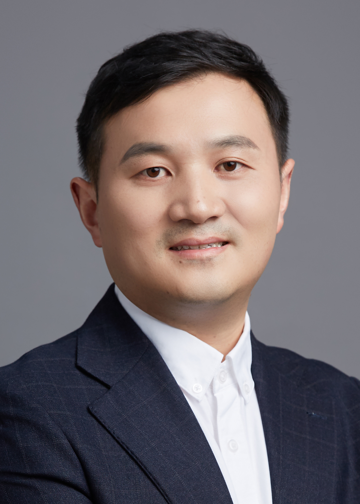
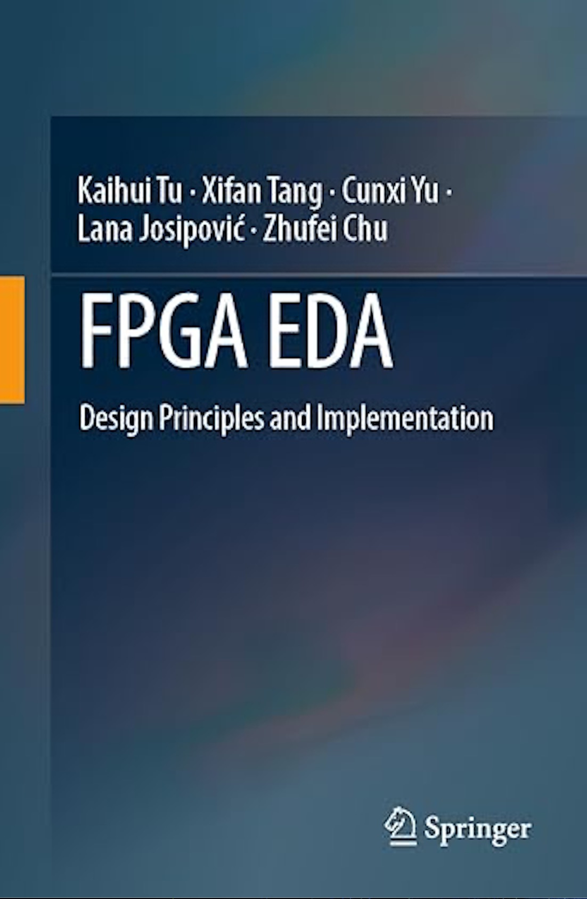
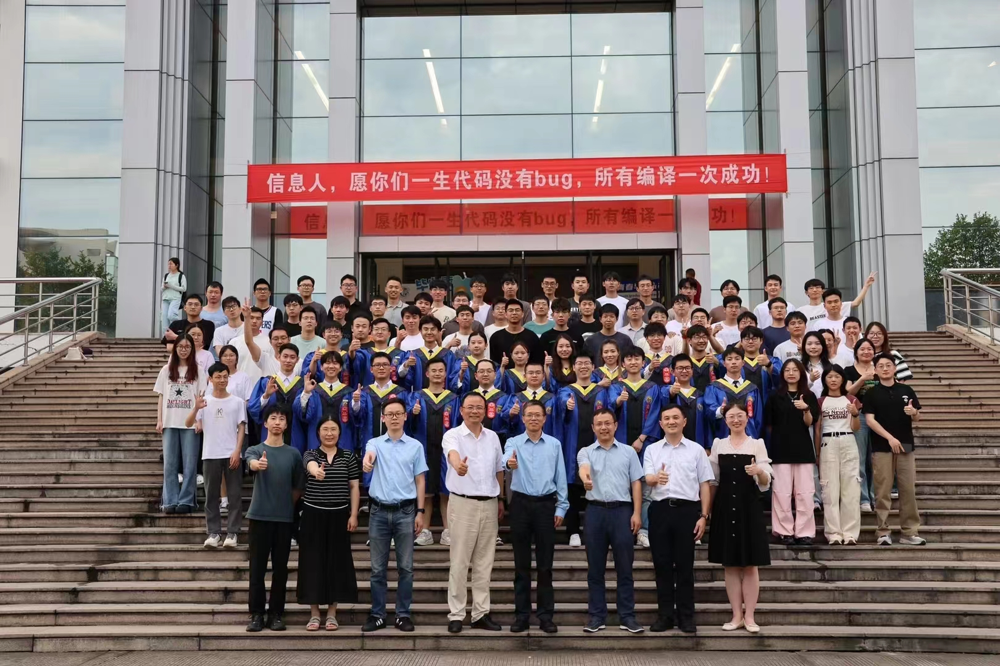

LOGIC SYNTHESIS & OPTIMIZATION
ALSO
Advanced Logic Synthesis and Optimization tool.
PROFESSOR · NINGBO UNIVERSITY
Exploring the logic.
Advancing circuit design.
Research in logic synthesis and its applications — from efficient circuit representations to emerging computing technologies.

RESEARCH FOCUS
BACKGROUND
LATEST UPDATES
RESEARCH OUTPUT
No publications found. Try another keyword or year.
OPEN SOURCE
LEARN & EXPLORE
BOOK

Kaihui Tu, Xifan Tang, Cunxi Yu, Lana Josipovic, and Zhufei Chu, FPGA EDA : Design Principles and Implementation, Springer, Jan. 2024.
ACADEMIC COMMUNITY

School of Integrated Circuits (SIC)
Ningbo University
Yuxiu Road 505, Zhenhai
Ningbo, Zhejiang 315211, China
USEFUL LINKS